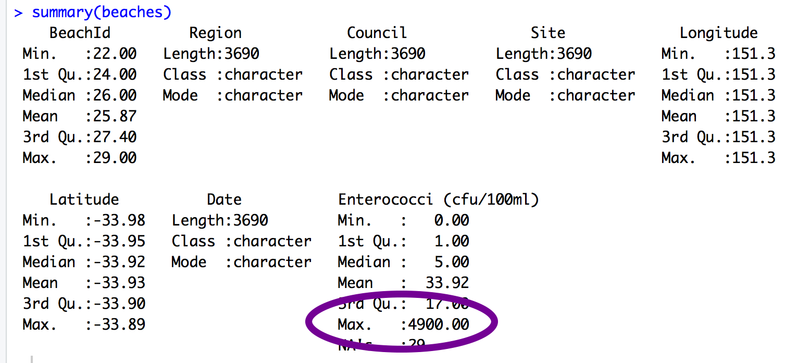

Exploring Rows
Now that we have cleaned up our column names to make them easier to work with, we can start to answer some questions about what’s in those rows! In this lesson, we’re going to filter, arrange, group_by and summarise the beaches data to answer the following questions:
- Question A: Which beach has the highest recorded bacteria levels?
- Question B: Does Coogee or Bondi have more extreme bacteria levels? Which beach has the worst bacteria levels on average?
- Question C: Which council does the worst job at keeping their beaches clean?
Lesson Outcomes
By the end of the lesson, you should be able to :
- use
arrangeto sort a dataframe andfilterto select parts of the - use
group_byandsummariseto get summary statistics - pipe these functions together to answer questions about your data
Which beach has the highest recorded bacteria levels?
When we first looked at a summary of the sydneybeaches data, we could see that the highest value of beach bacteria in the dataset was 4900. I wonder which beach that came from? Here, we use arrange to sort the beach bugs data in descending order. We can also use the pipe to combine filter and arrange to look at extreme values within a particular site.

In this screencast, we’ll review:
- How to use the
arrangefunction to sort your data - How to use
filterto look at just a subset of your data - How to use the pipe to combine
filterandarrangefunctions
Your turn
Watch the video and then carry out the following steps:
- Sort the sydney beaches data by beachbugs in descending order
- Pick your favourite beach and determine whether its most extreme beachbug values are higher or lower than the worst day at Coogee.
Does Coogee or Bondi have more extreme bacteria levels? Which beach has the worst bacteria levels on average?
“Where should I swim?” you might ask… Well, to answer that question we need to compare bacteria levels across sites.
To do this, you can put more than one argument into a filter function. For example, you can filter for either Coogee or Bondi.
In this screencast, we’ll review:
- How to use
filterby more than one site - How to create grouped summary stats using
group_byandsummarise - How to use the pipe to combine
filter,group_by, andsummarisefunctions
Watch the video and then carry out the following steps:
- Pick two beaches to compare, use
filterand the %in% operator - Use
group_byandsummariseto work out which beach has the worst bacteria levels on average.
Which council does the worst job at keeping their beaches clean?
Lets practice our new dplyr skills, using group_by council (instead of site) and summarise to see which council does the best job at keeping its beaches clean.
In this screencast, we’ll review:
- How to
group_bymore multiple variables to gain more insight into the summary statistics fromsummarise - How to assign the output of your
summariseto a new object in your environment
Now have a go with your own data!
- Choose a continuous variable and sort your data in descending order. Are the extreme values surprising?
- Pick a categorical variable, filter for one level of that variable and then sort in descending order
- Use
group_byandsummariseto create summary statistics that answer a question you have about your data
Next up - Clean It Up Lesson 3: Making New Variables
P.S. Interested in more dplyr tutorials?
Check out this blog series by R-Lady Suzan Baert!